# A collection of R packages designed for data science
library(tidyverse)4 Operationalising Variables
This section of the course covers how we define and measure variables, and how that can affect our analyses. This is illustrated with an example dataset. If you want to do the exercises yourself, make sure to check if you have all the required libraries installed.
4.1 Libraries and functions
Click to expand
4.1.1 Libraries
4.1.2 Libraries
# A Python data analysis and manipulation tool
import pandas as pd
# Simple yet exhaustive stats functions.
import pingouin as pg
# Python equivalent of `ggplot2`
from plotnine import *
# Statistical models, conducting tests and statistical data exploration
import statsmodels.api as sm
# Convenience interface for specifying models using formula strings and DataFrames
import statsmodels.formula.api as smf4.2 Exercise 1 - Cycling to work
For this example, we’re interested in finding out whether cycling to work increases staff members’ productivity.
Download the productivity.csv file.
This file contains a fictional dataset that explores the relationship between cycling to work and productivity at work. Each row corresponds to a different staff member at a small Cambridge-based company. There are four variables: cycle is a categorical variable denoting whether the individual cycles to work; distance is the distance in kilometres between the individual’s house and the office; projects is the number of projects successfully completed by the individual within the last 6 months; and mean_hrs is the average number of hours worked per week in the last 6 months.
As you may have noticed, we have two variables here that could serve as measures of productivity, and two ways of looking at cycling - whether someone cycles, versus how far they cycle.
First, let’s start by reading in the data, and visualising it.
# load the data
productivity <- read_csv("data/productivity.csv")
# and have a look
head(productivity)# load the data
productivity_py = pd.read_csv("data/productivity.csv")
# and have a look
productivity_py.head() cycle distance projects mean_hrs
0 no 6.68 2 55.0
1 no 4.32 3 48.0
2 no 5.81 2 42.0
3 no 8.49 2 37.5
4 no 6.47 4 32.0Now it’s time to explore this data in a bit more detail. We can gain some insight by examining our two measures of “cycling” (our yes/no categorical variable, and the distance between home and office) and our two measures of “productivity” (mean hours worked per week, and projects completed in the last 6 months).
# visualise using a boxplot
productivity %>%
ggplot(aes(x = cycle, y = distance)) +
geom_boxplot()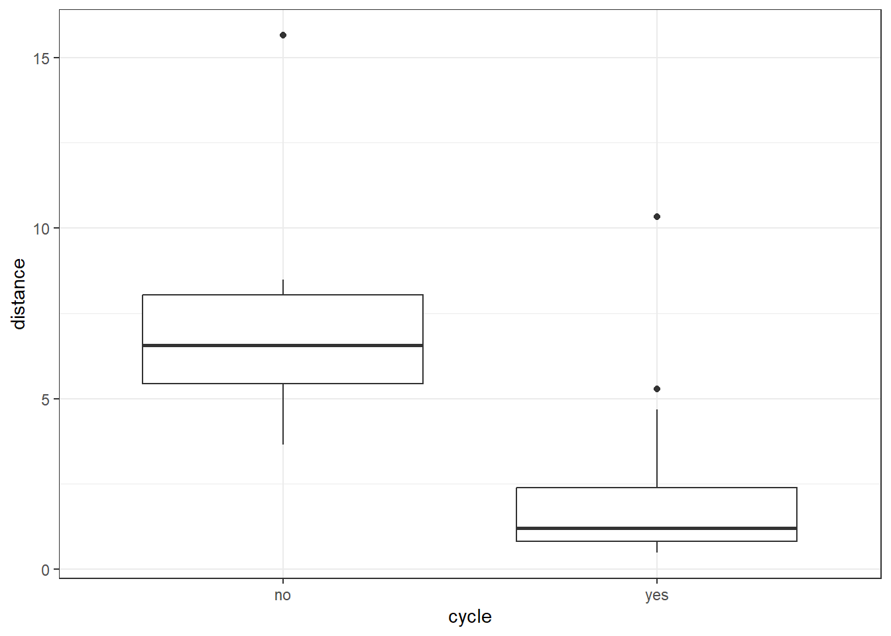
# compare distance between those who cycle vs those who don't
# NB: we use a t-test here, since there are only two groups
t.test(distance ~ cycle, data = productivity)
Welch Two Sample t-test
data: distance by cycle
t = 3.4417, df = 10.517, p-value = 0.005871
alternative hypothesis: true difference in means between group no and group yes is not equal to 0
95 percent confidence interval:
1.801439 8.293561
sample estimates:
mean in group no mean in group yes
7.3700 2.3225 # visualise using a boxplot
(ggplot(productivity_py,
aes(x = "cycle",
y = "distance")) +
geom_boxplot())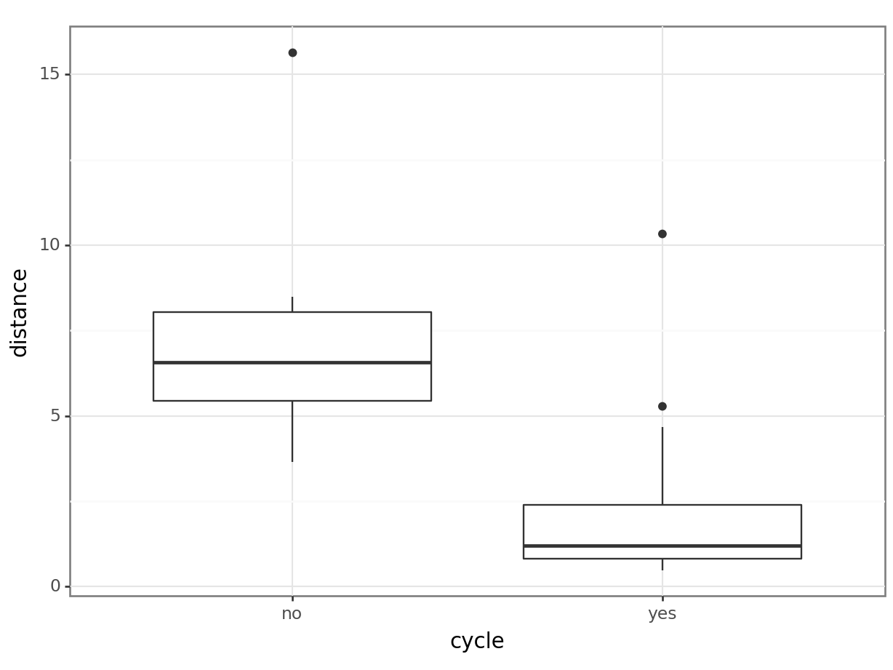
Next, we compare the distance between those who cycle and those who do not. We use a t-test, since there are only two groups.
Here we use the ttest() function from the pingouin library. This needs two vectors as input, so we split the data as follows and then run the test:
dist_no_cycle = productivity_py.query('cycle == "no"')["distance"]
dist_yes_cycle = productivity_py.query('cycle == "yes"')["distance"]
pg.ttest(dist_no_cycle, dist_yes_cycle).transpose() T-test
T 3.441734
dof 10.516733
alternative two-sided
p-val 0.005871
CI95% [1.8, 8.29]
cohen-d 1.683946
BF10 15.278
power 0.960302Let’s look at the second set of variables: the mean hours of worked per week and the number of projects completed in the past 6 months. When visualising this, we need to consider the projects as a categorical variable.
# visualise the data
productivity %>%
ggplot(aes(x = as.factor(projects), y = mean_hrs)) +
geom_boxplot()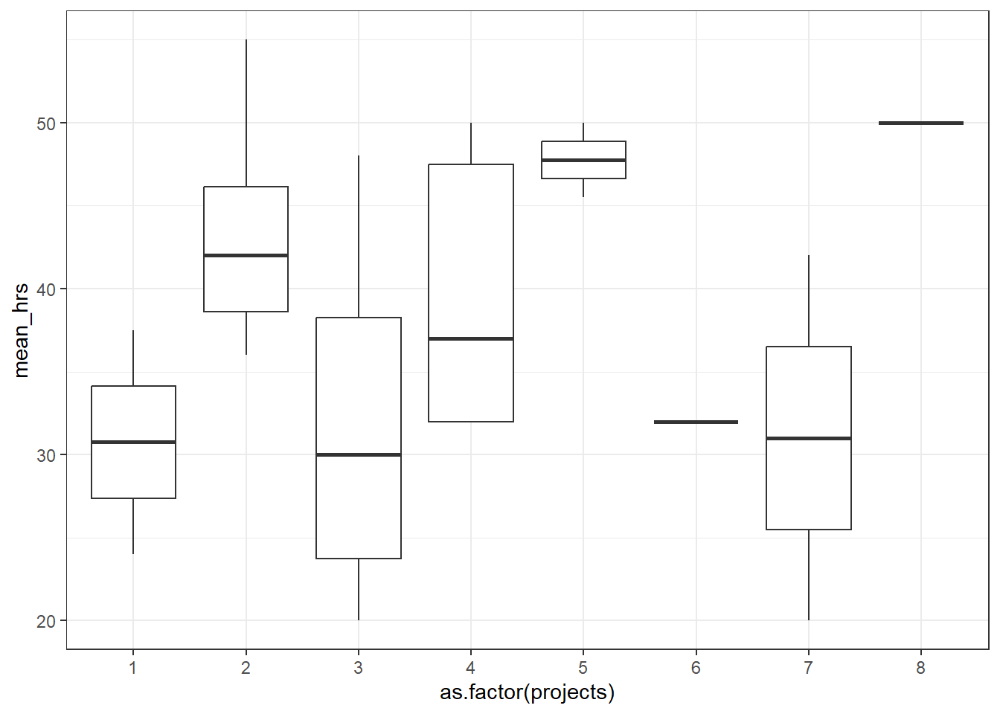
# construct a one-way ANOVA, treating projects as a categorical variable
lm_1 <- lm(mean_hrs ~ as.factor(projects), data = productivity)
anova(lm_1)Analysis of Variance Table
Response: mean_hrs
Df Sum Sq Mean Sq F value Pr(>F)
as.factor(projects) 7 936.02 133.72 1.598 0.2066
Residuals 16 1338.88 83.68 # visualise using a boxplot
(ggplot(productivity_py,
aes(x = productivity_py['projects'].astype('category'),
y = "mean_hrs")) +
geom_boxplot())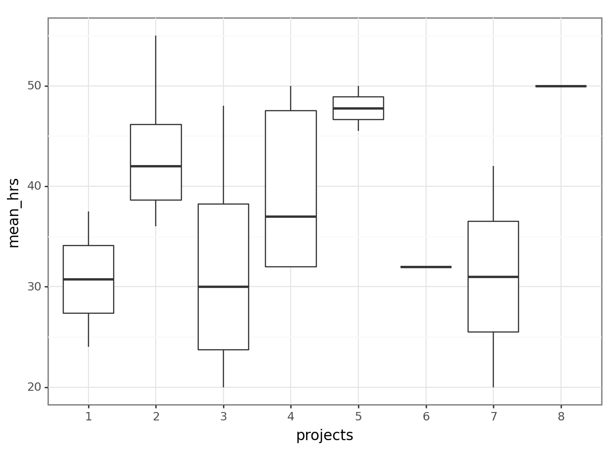
# construct a one-way ANOVA, treating projects as a categorical variable
pg.anova(dv = "mean_hrs",
between = "projects",
data = productivity_py,
detailed = True).round(3) Source SS DF MS F p-unc np2
0 projects 936.023 7 133.718 1.598 0.207 0.411
1 Within 1338.883 16 83.680 NaN NaN NaNWhat does this tell you about these two sets of variables, which (in theory at least!) tap into the same underlying construct, relate to one another? Can you spot any problems, or have you got any concerns at this stage?
If so, hold that thought.
Assessing the effect of cycling on productivity
The next step is to run some exploratory analyses. Since we’re not going to reporting these data in any kind of paper or article, and the whole point is to look at different versions of the same analysis with different variables, we won’t worry about multiple comparison correction this time.
When treating mean_hrs as our response variable, we can use standard linear models approach, since this variable is continuous.
# visualise using ggplot
productivity %>%
ggplot(aes(x = cycle, y = mean_hrs)) +
geom_boxplot()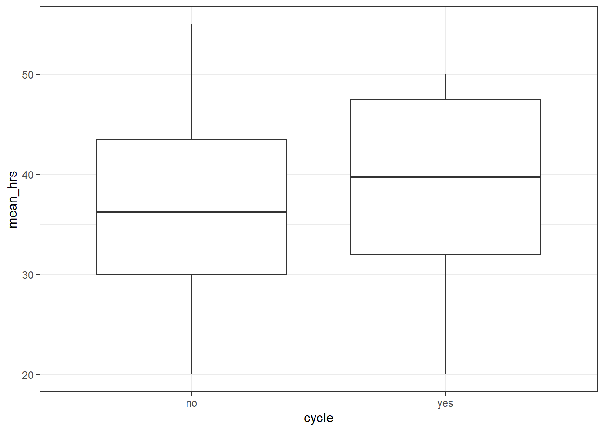
# run a t-test to compare mean_hrs for those who cycle vs those who don't
t.test(mean_hrs ~ cycle, data = productivity)
Welch Two Sample t-test
data: mean_hrs by cycle
t = -0.51454, df = 11.553, p-value = 0.6166
alternative hypothesis: true difference in means between group no and group yes is not equal to 0
95 percent confidence interval:
-12.803463 7.928463
sample estimates:
mean in group no mean in group yes
36.6875 39.1250 # visualise using a boxplot
(ggplot(productivity_py,
aes(x = "cycle",
y = "mean_hrs")) +
geom_boxplot())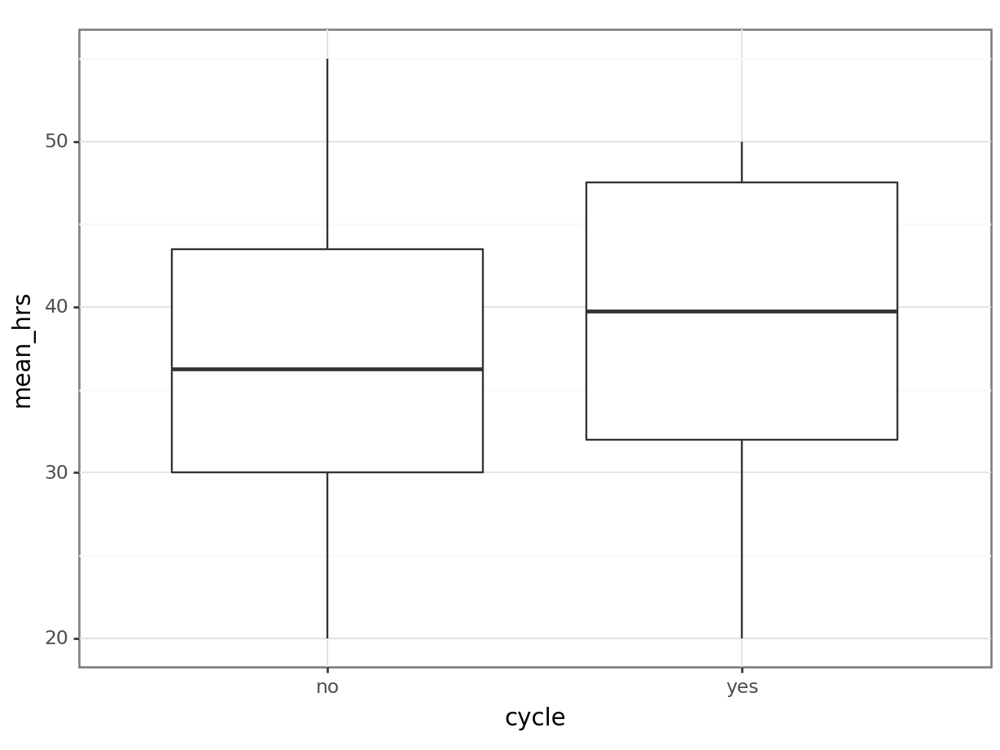
# run a t-test to compare mean_hrs for those who cycle vs those who don't
hrs_no_cycle = productivity_py.query('cycle == "no"')["mean_hrs"]
hrs_yes_cycle = productivity_py.query('cycle == "yes"')["mean_hrs"]
pg.ttest(hrs_no_cycle, hrs_yes_cycle).transpose() T-test
T -0.514542
dof 11.553188
alternative two-sided
p-val 0.616573
CI95% [-12.8, 7.93]
cohen-d 0.24139
BF10 0.427
power 0.083194Let’s also look at mean_hrs vs distance:
productivity %>%
ggplot(aes(x = distance, y = mean_hrs)) +
geom_point()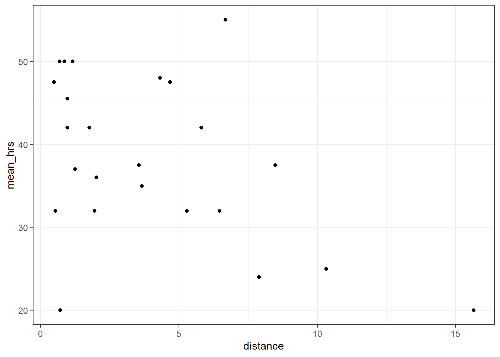
# run a simple linear regression analysis
lm_2 <- lm(mean_hrs ~ distance, data = productivity)
anova(lm_2)Analysis of Variance Table
Response: mean_hrs
Df Sum Sq Mean Sq F value Pr(>F)
distance 1 473.28 473.28 5.7793 0.02508 *
Residuals 22 1801.63 81.89
---
Signif. codes: 0 '***' 0.001 '**' 0.01 '*' 0.05 '.' 0.1 ' ' 1# visualise using a scatterplot
(ggplot(productivity_py,
aes(x = "distance",
y = "mean_hrs")) +
geom_point())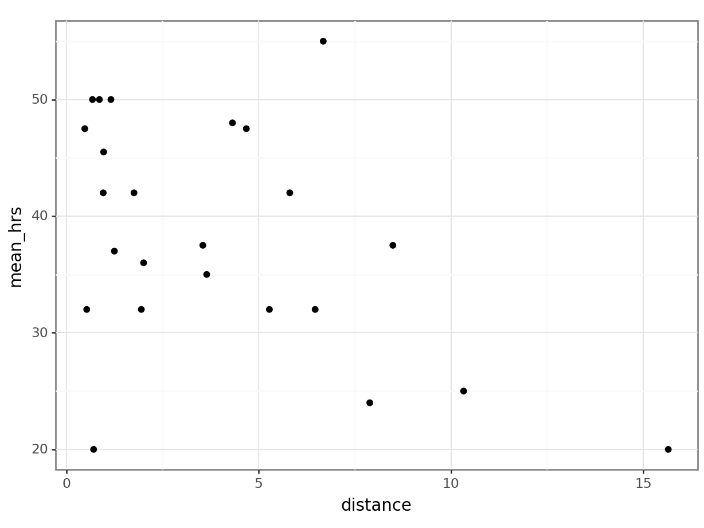
We can perform a linear regression on these data:
# create a linear model
model = smf.ols(formula = "mean_hrs ~ distance",
data = productivity_py)
# and get the fitted parameters of the model
lm_productivity_py = model.fit()
# look at the model output
print(lm_productivity_py.summary()) OLS Regression Results
==============================================================================
Dep. Variable: mean_hrs R-squared: 0.208
Model: OLS Adj. R-squared: 0.172
Method: Least Squares F-statistic: 5.779
Date: Wed, 02 Aug 2023 Prob (F-statistic): 0.0251
Time: 16:15:28 Log-Likelihood: -85.875
No. Observations: 24 AIC: 175.8
Df Residuals: 22 BIC: 178.1
Df Model: 1
Covariance Type: nonrobust
==============================================================================
coef std err t P>|t| [0.025 0.975]
------------------------------------------------------------------------------
Intercept 43.0833 2.711 15.891 0.000 37.461 48.706
distance -1.1912 0.496 -2.404 0.025 -2.219 -0.164
==============================================================================
Omnibus: 1.267 Durbin-Watson: 1.984
Prob(Omnibus): 0.531 Jarque-Bera (JB): 0.300
Skew: -0.163 Prob(JB): 0.861
Kurtosis: 3.441 Cond. No. 8.18
==============================================================================
Notes:
[1] Standard Errors assume that the covariance matrix of the errors is correctly specified.This shows us that while cycle does not significantly predict mean_hrs, distance does. (If you had some concerns about the distance variable earlier, continue to hold that thought.)
When treating projects as our response variable, we now have to use a GLM - specifically, we’ll use Poisson regression, since projects is a count variable. If you aren’t familiar with GLMs or Poisson regression, you can expand the box below to find out a bit more (including a link to further materials that will give you more detail).
Generalised linear models and Poisson regression
Standard linear models require that your response or outcome variable be continuous. However, your variable might instead be a probability (e.g., a coin flip, or a proportion), or a count variable, which follow a binomial or Poisson distribution respectively (rather than a normal/Gaussian distribution). To account for this, generalised linear models allow the fitted linear model to be related to the outcome variable via some link function, commonly a log or logit function. Model parameters are also estimated slightly differently; as opposed to the ordinary least squares approach we use in linear regression, GLMs make use of something called maximum likelihood estimation.
Poisson regression is a specific type of GLM, which uses a log function; it’s also sometimes referred to as a log-linear model. We use Poisson regression in scenarios where we have an outcome variable that is count data, i.e., data that only takes non-negative integer values, or when modelling contingency tables.
If you’d like to read more or learn how to fit GLMs yourself, you can find additional course materials here.
If GLMs don’t sound interesting to you right now, then don’t worry - the output is very similar to your typical linear model!
First, we look at distance vs projects.
productivity %>%
ggplot(aes(x = distance, y = projects)) +
geom_point()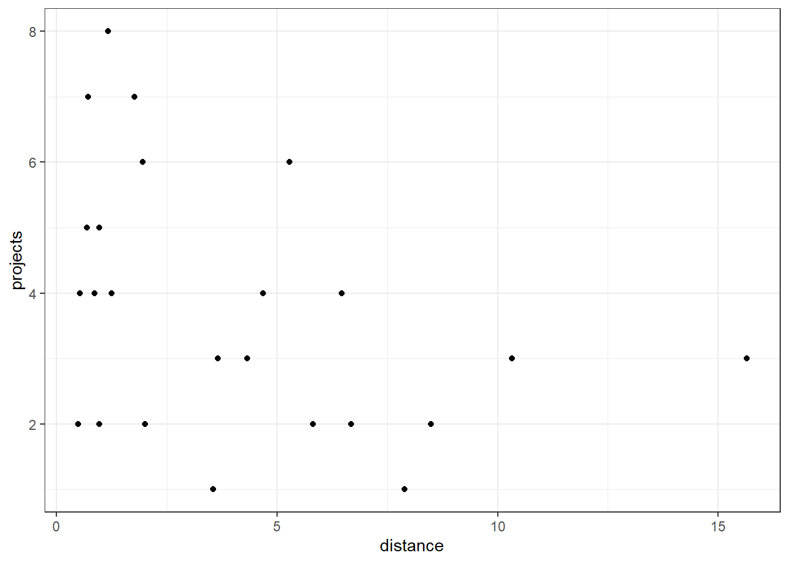
glm_1 <- glm(projects ~ distance, data = productivity,
family = "poisson")
summary(glm_1)
Call:
glm(formula = projects ~ distance, family = "poisson", data = productivity)
Coefficients:
Estimate Std. Error z value Pr(>|z|)
(Intercept) 1.54068 0.15119 10.190 <2e-16 ***
distance -0.06038 0.03301 -1.829 0.0674 .
---
Signif. codes: 0 '***' 0.001 '**' 0.01 '*' 0.05 '.' 0.1 ' ' 1
(Dispersion parameter for poisson family taken to be 1)
Null deviance: 23.485 on 23 degrees of freedom
Residual deviance: 19.766 on 22 degrees of freedom
AIC: 97.574
Number of Fisher Scoring iterations: 4# visualise using a scatterplot
(ggplot(productivity_py,
aes(x = "distance",
y = "projects")) +
geom_point())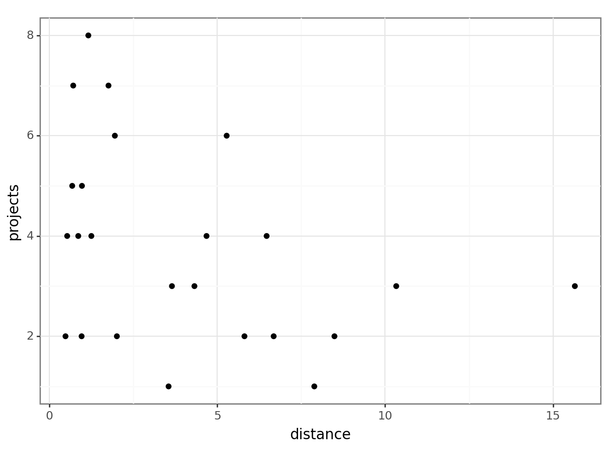
# create a generalised linear model
model = smf.poisson(formula = "projects ~ distance",
data = productivity_py)
# and get the fitted parameters of the model
glm1_py = model.fit()Optimization terminated successfully.
Current function value: 1.949462
Iterations 5# look at the model output
print(glm1_py.summary()) Poisson Regression Results
==============================================================================
Dep. Variable: projects No. Observations: 24
Model: Poisson Df Residuals: 22
Method: MLE Df Model: 1
Date: Wed, 02 Aug 2023 Pseudo R-squ.: 0.03822
Time: 16:15:30 Log-Likelihood: -46.787
converged: True LL-Null: -48.647
Covariance Type: nonrobust LLR p-value: 0.05380
==============================================================================
coef std err z P>|z| [0.025 0.975]
------------------------------------------------------------------------------
Intercept 1.5407 0.151 10.190 0.000 1.244 1.837
distance -0.0604 0.033 -1.829 0.067 -0.125 0.004
==============================================================================Next, we look at cycle vs projects.
productivity %>%
ggplot(aes(x = cycle, y = projects)) +
geom_boxplot()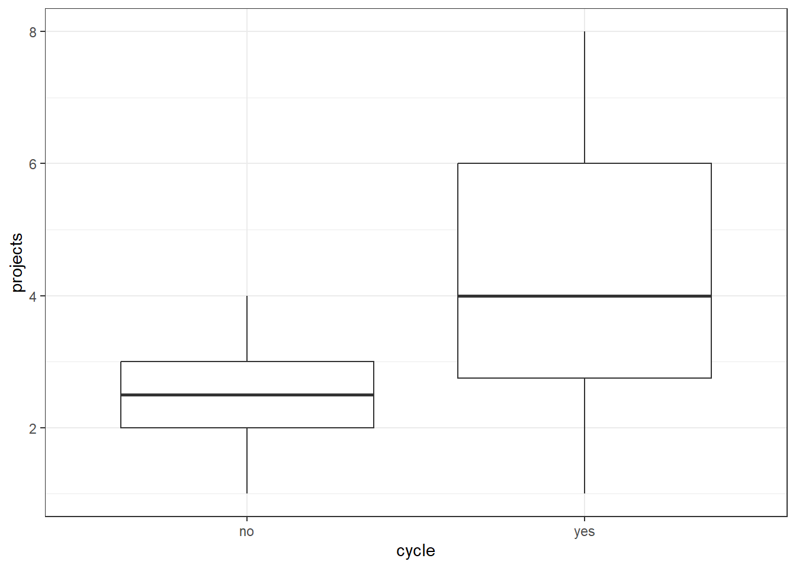
glm_2 <- glm(projects ~ cycle, data = productivity,
family = "poisson")
summary(glm_2)
Call:
glm(formula = projects ~ cycle, family = "poisson", data = productivity)
Coefficients:
Estimate Std. Error z value Pr(>|z|)
(Intercept) 0.9163 0.2236 4.098 4.17e-05 ***
cycleyes 0.5596 0.2535 2.207 0.0273 *
---
Signif. codes: 0 '***' 0.001 '**' 0.01 '*' 0.05 '.' 0.1 ' ' 1
(Dispersion parameter for poisson family taken to be 1)
Null deviance: 23.485 on 23 degrees of freedom
Residual deviance: 18.123 on 22 degrees of freedom
AIC: 95.931
Number of Fisher Scoring iterations: 4# visualise using a scatterplot
(ggplot(productivity_py,
aes(x = "cycle",
y = "projects")) +
geom_boxplot())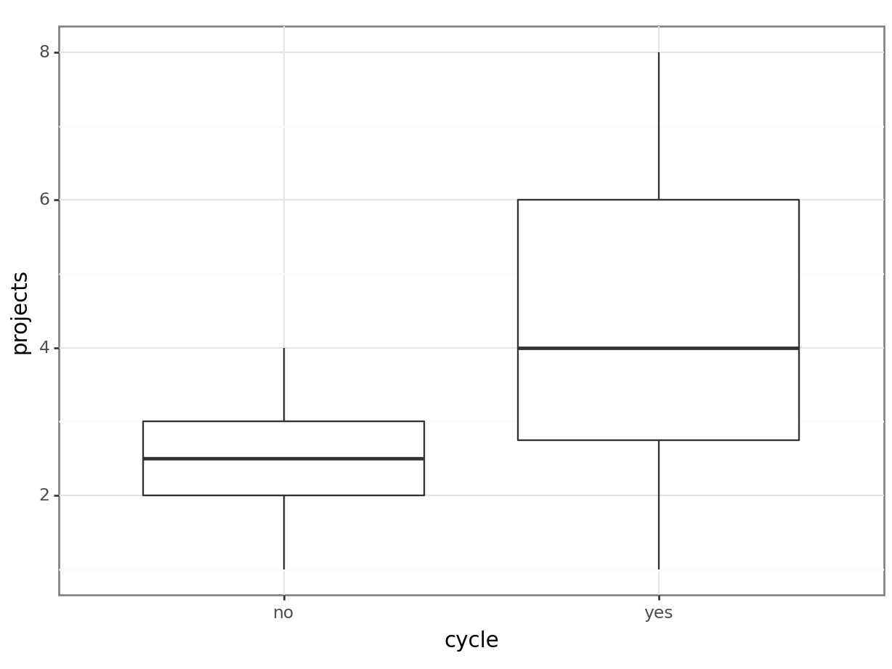
# create a generalised linear model
model = smf.poisson(formula = "projects ~ cycle",
data = productivity_py)
# and get the fitted parameters of the model
glm2_py = model.fit()Optimization terminated successfully.
Current function value: 1.915222
Iterations 5# look at the model output
print(glm2_py.summary()) Poisson Regression Results
==============================================================================
Dep. Variable: projects No. Observations: 24
Model: Poisson Df Residuals: 22
Method: MLE Df Model: 1
Date: Wed, 02 Aug 2023 Pseudo R-squ.: 0.05512
Time: 16:15:33 Log-Likelihood: -45.965
converged: True LL-Null: -48.647
Covariance Type: nonrobust LLR p-value: 0.02057
================================================================================
coef std err z P>|z| [0.025 0.975]
--------------------------------------------------------------------------------
Intercept 0.9163 0.224 4.098 0.000 0.478 1.355
cycle[T.yes] 0.5596 0.254 2.207 0.027 0.063 1.057
================================================================================This shows us that cycle significantly predicts projects, meaning the number of projects that get completed is not completely random, but some of the variance in that can be explained by whether a person cycles to work, or not. In contrast, distance does not appear to be a significant predictor of projects (although it’s only marginally non-significant). This is the opposite pattern, more or less, to the one we had for mean_hrs.
That thought you were holding…
Those of you who are discerning may have noticed that the distance variable is problematic as a measure of “cycling to work” in this particular dataset - this is because the dataset includes all the distances to work for the staff members who don’t cycle, as well as those who do.
What happens if we remove those values, and look at the relationship between distance and our response variables again?
# use the filter function to retain only the rows where the staff member cycles
productivity_cycle <- productivity %>%
filter(cycle == "yes")productivity_cycle_py = productivity_py[productivity_py["cycle"] == "yes"]We’ll repeat earlier visualisations and analyses, this time with the colour aesthetic helping us to visualise how the cycle variable affects the relationships between distance, mean_hrs and projects.
productivity %>%
ggplot(aes(x = distance, y = mean_hrs, colour = cycle)) +
geom_point()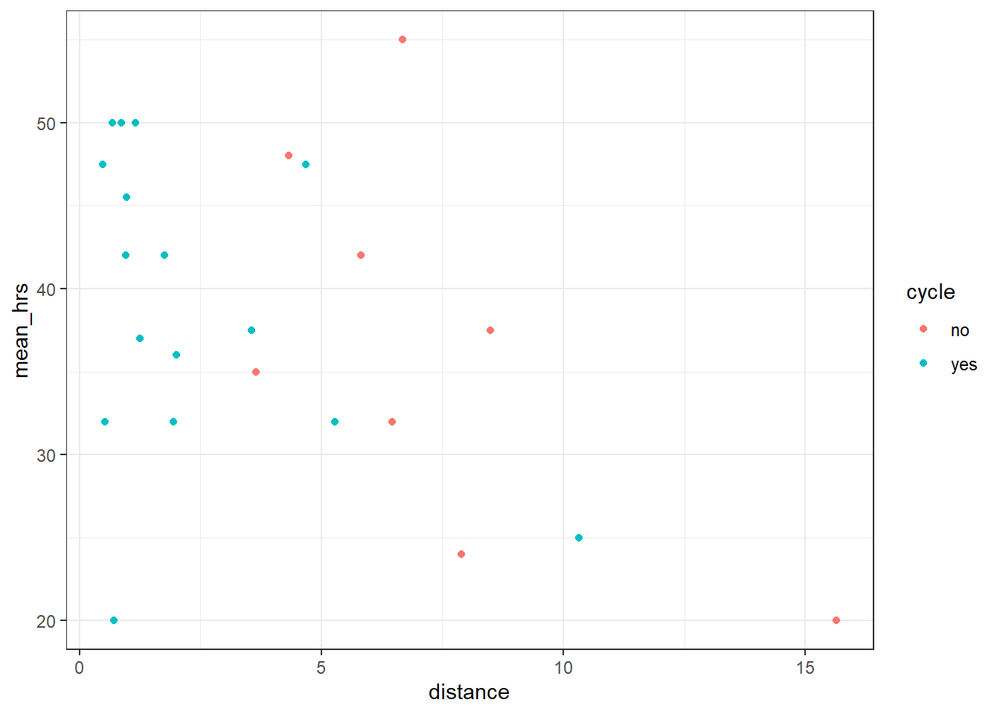
lm_3 <- lm(mean_hrs ~ distance, data = productivity_cycle)
anova(lm_3)Analysis of Variance Table
Response: mean_hrs
Df Sum Sq Mean Sq F value Pr(>F)
distance 1 202.77 202.766 2.6188 0.1279
Residuals 14 1083.98 77.427 productivity %>%
ggplot(aes(x = distance, y = projects, colour = cycle)) +
geom_point()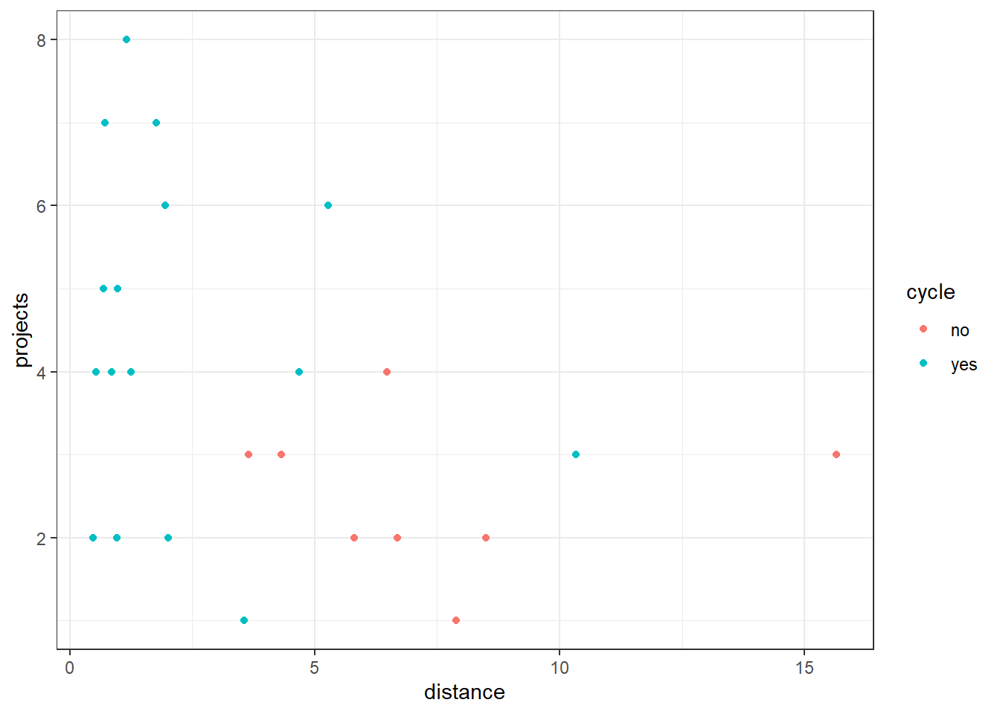
glm_3 <- glm(projects ~ distance, data = productivity_cycle,
family = "poisson")
summary(glm_3)
Call:
glm(formula = projects ~ distance, family = "poisson", data = productivity_cycle)
Coefficients:
Estimate Std. Error z value Pr(>|z|)
(Intercept) 1.55102 0.16292 9.52 <2e-16 ***
distance -0.03380 0.05204 -0.65 0.516
---
Signif. codes: 0 '***' 0.001 '**' 0.01 '*' 0.05 '.' 0.1 ' ' 1
(Dispersion parameter for poisson family taken to be 1)
Null deviance: 15.591 on 15 degrees of freedom
Residual deviance: 15.144 on 14 degrees of freedom
AIC: 70.869
Number of Fisher Scoring iterations: 4# visualise using a scatterplot
(ggplot(productivity_py,
aes(x = "distance",
y = "mean_hrs",
colour = "cycle")) +
geom_point())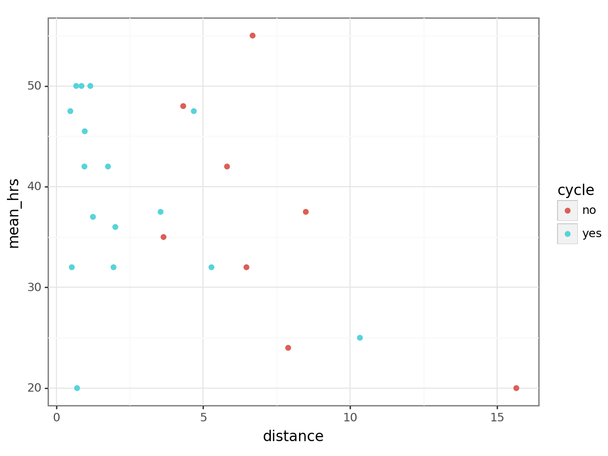
# create a linear model
model = smf.ols(formula = "mean_hrs ~ distance",
data = productivity_cycle_py)
# and get the fitted parameters of the model
lm_dist_cycle_py = model.fit()
# look at the model output
print(lm_dist_cycle_py.summary()) OLS Regression Results
==============================================================================
Dep. Variable: mean_hrs R-squared: 0.158
Model: OLS Adj. R-squared: 0.097
Method: Least Squares F-statistic: 2.619
Date: Wed, 02 Aug 2023 Prob (F-statistic): 0.128
Time: 16:15:37 Log-Likelihood: -56.429
No. Observations: 16 AIC: 116.9
Df Residuals: 14 BIC: 118.4
Df Model: 1
Covariance Type: nonrobust
==============================================================================
coef std err t P>|t| [0.025 0.975]
------------------------------------------------------------------------------
Intercept 42.4204 2.998 14.151 0.000 35.991 48.850
distance -1.4189 0.877 -1.618 0.128 -3.299 0.462
==============================================================================
Omnibus: 4.148 Durbin-Watson: 2.906
Prob(Omnibus): 0.126 Jarque-Bera (JB): 2.008
Skew: -0.820 Prob(JB): 0.366
Kurtosis: 3.565 Cond. No. 4.85
==============================================================================
Notes:
[1] Standard Errors assume that the covariance matrix of the errors is correctly specified.# visualise using a scatterplot
(ggplot(productivity_py,
aes(x = "distance",
y = "projects",
colour = "cycle")) +
geom_point())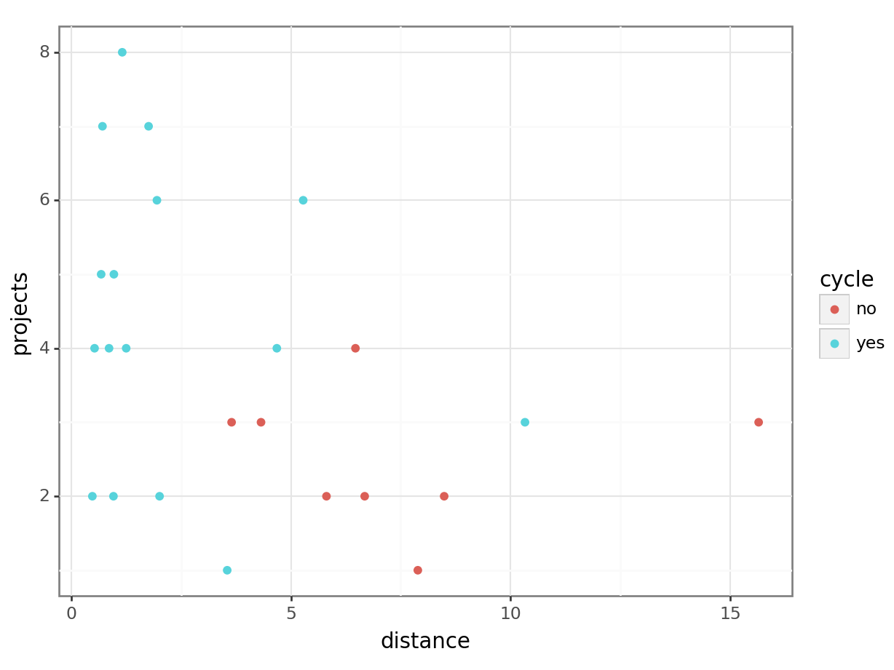
# create a poisson model
model = smf.poisson(formula = "projects ~ distance",
data = productivity_cycle_py)
# and get the fitted parameters of the model
lm_proj_cycle_py = model.fit()Optimization terminated successfully.
Current function value: 2.089649
Iterations 4# look at the model output
print(lm_proj_cycle_py.summary()) Poisson Regression Results
==============================================================================
Dep. Variable: projects No. Observations: 16
Model: Poisson Df Residuals: 14
Method: MLE Df Model: 1
Date: Wed, 02 Aug 2023 Pseudo R-squ.: 0.006655
Time: 16:15:40 Log-Likelihood: -33.434
converged: True LL-Null: -33.658
Covariance Type: nonrobust LLR p-value: 0.5033
==============================================================================
coef std err z P>|z| [0.025 0.975]
------------------------------------------------------------------------------
Intercept 1.5510 0.163 9.520 0.000 1.232 1.870
distance -0.0338 0.052 -0.650 0.516 -0.136 0.068
==============================================================================Ah. Turns out we were right to be concerned; when staff members who don’t cycle are removed from the dataset, the significant relationship that we saw earlier between distance and mean_hrs disappears. And the marginally non-significant relationship we observed between distance and projects becomes much less significant.
This leaves us with just one significant result: projects ~ cycle. But if we really were trying to report on these data, in a paper or report of some kind, we’d need to think very carefully about how much we trust this result, or whether perhaps we’ve stumbled on a false positive by virtue of running so many tests. We may also want to think carefully about whether or not we’re happy with these definitions of the variables; for instance, is the number of projects completed really the best metric for productivity at work?
4.3 Summary
Key Points
- There are multiple ways to operationalise a variable, which may affect whether the variable is categorical or continuous
- The nature of the response variable will alter what type of model can be fitted to the dataset
- Some operationalisations may better capture your variable of interest than others
- If you do not effectively operationalise your variable in advance, you may find yourself “cherry-picking” your dataset